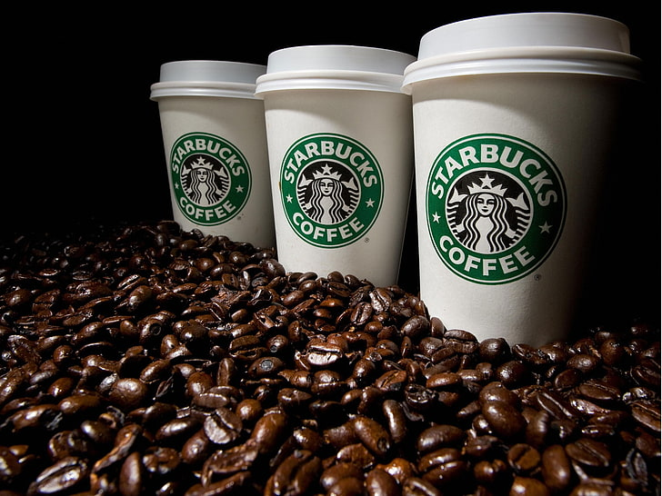

Coffee tastes better when it is strong!
Do you agree?
A 2017 review of clinical trials found that drinking coffee is generally safe within
usual levels of intake and is more likely to improve health outcomes than to cause harm at doses of 3 or 4
cups of coffee daily. Exceptions include possible increased risk in women having bone fractures, and a
possible increased risk in pregnant women of fetal loss or decreased birth weight. Results were complicated
by poor study quality, and differences in age, gender, health status, and serving size.
Types
Coffee beans are the seeds of a fruit called a coffee cherry. Coffee cherries grow on coffee
trees from a genus of plants called Coffea. There are a wide variety of species of coffee plants, ranging
from shrubs to trees.
- • Type of bean. There are two main types of coffee species, Arabica and Robusta.
Arabica originates from Ethiopia and produces a mild, flavorful tasting coffee. It is the most popular
type worldwide. However, it is expensive to grow because the Arabica plant is sensitive to the
environment, requiring shade, humidity, and steady temperatures between 60-75 degrees Fahrenheit. The
Robusta coffee plant is more economical to grow because it is resistant to disease and survives in a
wider range of temperatures between 65-97 degrees Fahrenheit. It can also withstand harsh climate
changes such as variations in rainfall and strong sunlight.
- • Type of roast. Coffee beans start out green. They are roasted at a high heat to
produce a chemical change that releases the rich aroma and flavor to associate with coffee. They are
then cooled and ground for brewing. Roasting levels range from light to medium to dark. The lighter the
roast, lighter the color and roasted flavor and the higher its acidity. Dark roasts produce a black bean
with little acidity and a bitter roasted flavor. The popular French roast is medium-dark.
- • Type of grind. A medium grind is the most common and used for automatic drip
coffee makers. A fine grind is used for deeper flavors like espresso, which releases the oils, and a
coarse grind is used in coffee presses.
- • Decaffeinated coffee. This is an option for those who experience unpleasant side
effects from caffeine. The two most common methods used to remove caffeine from coffee is to apply
chemical solvents (methylene chloride or ethyl acetate) or carbon dioxide gas. Both are applied to
steamed or soaked beans, which are then allowed to dry. The solvents bind to caffeine and both evaporate
when the beans are rinsed and/or dried. According to U.S. regulations, at least 97% of the caffeine must
be removed to carry the decaffeinated label, so there may be trace residual amounts of caffeine. Both
methods may cause some loss of flavor as other naturally occurring chemicals in coffee beans that impart
their unique flavor and scent may be destroyed during processing.
Top Brands

1. Starbucks
The brand is not known for sourcing and roasting the best coffee beans. Most of their coffee beans
are dark roasted, meaning, they taste bitter. And many consumers, who know their coffee, complain
that Starbucks coffee has a distinct burnt taste.
2. Dunkin' Doughnuts
Dunkin' Donuts markets itself primarily as a coffee seller that also offers donuts and food, a fact
made apparent by a coffee cup prominently featured on the company's logo and executive management's
explicit assertion that Dunkin' Donuts is a beverage company. Despite building an identity as a
coffee seller, food is still an important element of Dunkin' Donuts' offering.
3. McCafé
Owned by McDonald's, McCafe is one of the leading coffee chains in countries like
Australia and New Zealand. McCafé enjoys the benefit of having a vast presence (Because let's face
it, McDonald's is everywhere!) As McDonald's expands worldwide, there is a decent chance of McCafé
doing the
same.
4. Peet's Coffee
While both Starbucks and Peet's offer strong coffee, Peet's is typically
considered to be the stronger of the two. This is due in part to the fact that Peet's coffee is
roasted for a longer period of time, resulting in a more robust flavor. Additionally, Peet's coffee
beans are typically darker, which also contributes to a stronger taste.